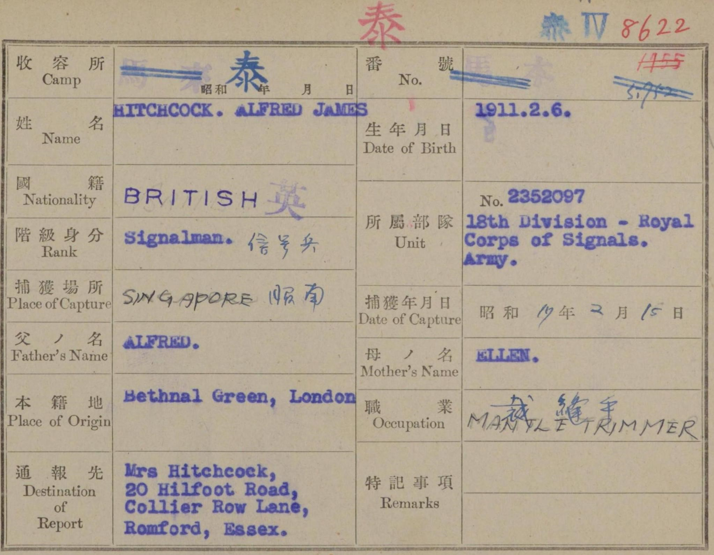
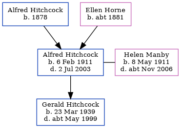

Alfred James Hitchcock 1911 - 2003
[ Home ] | [ Calendar ] | [ Surnames Index ] | [ Family History ]A textile warehouseman and the son of Alfred Hitchcock (a draper's warehouseman) and Ellen Horne (a bottle labeller), Alfred Hitchcock, the third cousin once-removed on the father's side of Nigel Horne, was born in Bethnal Green, London, England on Feb 6, 19111,2,3,4,5,6, was baptized there at St Peter's Church on Mar 5, 1911 and married Helen Manby (with whom he had 1 child, Gerald Anthony) in West Ham, Essex, England around Nov 19357.
Throughout his life, he lived at 50 Corfield Street in Bethnal Green on Apr 2, 19111; and on 20 Hillfoot Road, Romford, London, England on Sep 29, 19392. During 1942, he was serving in the military in Singapore (rank: Signalman POW in Thailand).
He died on Jul 2, 2003 in Bury St Edmunds, Suffolk, England4.
Parents
- Alfred was born in 1878
- Ellen was born c. 1881
Children
- Gerald Anthony was born on Mar 23, 1939
Citations
- 1911 Census for England & Wales - Findmypast (was age 0 and the son of the head of the household)
- 1939 Register - Findmypast (was the head of the household)
- England & Wales births 1837-2006 - Findmypast
- England & Wales deaths 1837-2007 - Findmypast
- Prisoners Of War 1715-1945 - Findmypast
- World War 2 Allies Collection - Findmypast
- England & Wales Marriages 1837-2005 - Findmypast
Media
Alfred James Hitchcock - Baptism Record

Alfred Hitchock POW Record

England & Wales births 1837-2006 - BMD/B/1911/1/AZ/000656/038
Prisoners of War 1715-1945 Image - GBM-POW-GALLIP-1-1-84-01082
England & Wales deaths 1837-2007 - BMD/D/2003/7/85512733
1911 Census For England & Wales - GBC-1911-RG14-01430-0115-3
1939 Register Transcription - TNA-R39-1539-1539F-003-20
England & Wales marriages 1837-2005 - BMD/M/1935/4/AZ/000600/039
England & Wales Government Probate Death Index 1960-2019 - GBOR/GOVPROBATE/B/2001-2004/00414612
World War 2 Allies Collection - WW2/04056267
Family Tree
Generated by Ged2Site. Last updated on Jul 20, 2025